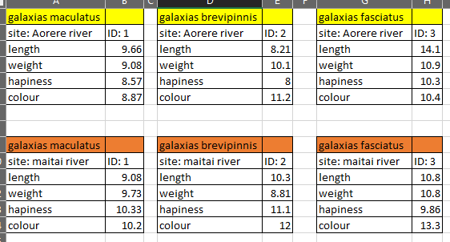
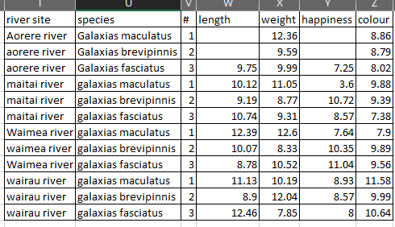
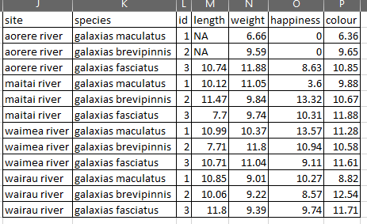
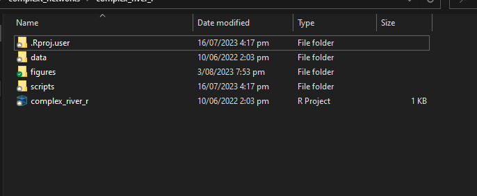
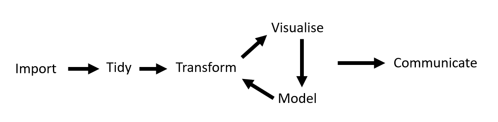

# Description ----
# here is where I will describe what this script does ...
# Set up -----------------------------------------------------------------------
# load packages
# Load data --------------------------------------------------------------------
# data cleaning ----------------------------------------------------------------
# analysis ---------------------------------------------------------------------
# plot -------------------------------------------------------------------------
# save outputs -----------------------------------------------------------------
# END --------------------------------------------------------------------------Introduction to R
OVERVIEW
Quick introduction to R, RStudio and the tidyverse. This session is only meant to give a quick overview of some of the basic tools to get up and running. The session will be broken down into four main components:
- Tidy data
- Rstudio overview and setting up a project
Rfundamentals- Data wrangling using the
tidyverse
Helpful resources:
- For a detailed introduction to
R, RStudio and beyond see Intro2r and their associated resources - For a
tidyverseapproach to data science see R for Data Science
1 TIDY DATA
Before getting into R it is useful to understand a little about structuring data in a way that makes it easy for R to read.
Challenging :(

Challenging in a different way :(

Better :)

2 SETTING UP RSTUDIO
- Global settings
- organise panes
- custom themes
- margin marker
- rainbow parentheses
- Show white space characters
- ….lots of stuff to mess with
Setting up a project
A project is a system for organising R code, data, figures etc. so they are easy to navigate and manage.
- File structure
- add folders:
data,figures,scripts…
- add folders:

Now we can use relative file paths:
"./figures/figure_1.png""./data/my_raw_data.csv""./scripts/my_helper_functions.r"
Not hard coded file paths:
"C:/Users/finn/OneDrive/documents/R_tutorial_caw/data/my_raw_data.csv"
Setting up scripts
.r files are where we save our code. These files are made up of code that does stuff and comments that don’t ‘do’ anything.
Comments are notes describing what the code does. Code should be well commented (anything after a # is a comment and will not be run as code) so that others, or future you knows what you did, and why. Use comments and white space to make code easy to read.
Adding four dashes after a comment (# Intro ----) will add the comment to the outline panel.
An example empty script with commented sections:
And an example with some simple commented code:
# Description ----
# load socio-economic data, and look at the relationship between gdp and
# life expectancy.
# Set up -----------------------------------------------------------------------
# install new packages - only do once
install.packages("gapminder")
# load packages
library(tidyverse)
library(gapminder)
# Load data --------------------------------------------------------------------
# load built-in gapminder dataset
gap_df <- gapminder::gapminder
# inspect first 10 rows of dataset
head(gap_df)
#check column types
str(gap_df)
# data cleaning ----------------------------------------------------------------
# get Asia only, only data for the most recent year, and drop "pop" column
asia_df <- gap_df |>
filter(continent == "Asia") |>
filter(year == max(year)) |>
select(-pop)
# analysis ---------------------------------------------------------------------
# run linear regression
life_exp_lm <- lm(formula = log(lifeExp) ~ gdpPercap, data = asia_df)
# get summary of model results
summary(life_exp_lm)
# plot -------------------------------------------------------------------------
# plot gdp vs life expectancy
p1 <- ggplot(data = asia_df, aes(x = log(gdpPercap),
y = lifeExp,
colour = country)) +
geom_point() +
labs(x = "Log(GDP/capita ($))",
y = "Life expectency (yrs)") +
theme_bw()
# view plot
p1
# save outputs -----------------------------------------------------------------
# save figure
ggsave(filename = "./figures/fig1_life_gdp.png")
# save model output
saveRDS(life_exp_lm, "./data/gapminder_lm.rds")
# END --------------------------------------------------------------------------And the same script without formatting:
install.packages("gapminder")
library(tidyverse)
library(gapminder)
gap_df <- gapminder::gapminder
head(gap_df)
str(gap_df)
asia_df<-gap_df|>filter(continent=="Asia")|>filter(year==max(year))|>select(-pop)
life_exp_lm<-lm(formula = lifeExp~gdpPercap,data=asia_df)
summary(life_exp_lm)
p1 <- ggplot(data=asia_df,aes(x=log(gdpPercap),y=lifeExp,colour=country))+geom_point()+labs(x="Log(GDP/capita ($))",y ="Life expectency (yrs)")+theme_bw()
p1
ggsave(filename="./figures/fig1_life_gdp.png")
saveRDS(life_exp_lm, "./data/gapminder_lm.rds")RStudio keyboard shortcuts
There are many shortcuts available. A couple I use regularly:
cntrl + enter- run current line/highlighted codeF1- help for functioncntrl + shift + m- insert pipe operator (|>) - I change this tocntrl + p
See help->keyboard shortcuts in RStudio for a full list.
3 R FUNDAMENTALS
Objects
Objects can be thought of as containers for storing stuff (data).
Use concise but informative object names. Can’t start with a number or included spaces. Common object naming conventions include:
- camel case (
fishData) - snake_case (
fish_data) - periods (
fish.data)
Don’t use names of existing functions e.g. table or df.
# store the word "Finn" in the object "name"
name <- "Finn"
# return the object
name
# store the number 110 in the object "height"
height <- 110
# add to my height
height + 10
# create a object called letter_df
letter_df <- data.frame(let = letters[1:5],
id = 1:5)
letter_dfData types
There are four common data types you will run into:
character- (“r”, “hello”)integer- (1L, 50L, 1001L (L is used to declare the number is an integer))numeric- (0.45, 10.2, -1.6)logical- (TRUE or FALSE)
Use the class function to confirm:
# create a object x and store a character string
x <- "hello"
# check object type
class(x)
# overwrite x with a numeric
x <- 5.5
# check object type
class(x)Data structures
Data can be stored in a variety of ways in R, most often you will work with, vectors, matrices, dataframes, and lists.
vector- all values must be of the same typematrix- all values must be of the same typedataframe- each column can be a different type - like an excel spreadsheetlist- each list element can be anything e.g. a list of a dataframe, a matrix and a vector
# create a vector
my_vec <- c(1, 2, 3)
# have a look
my_vec
# get the second element
my_vec[2]
# create a matrix
my_mx <- matrix(1:25, nrow = 5, ncol = 5)
# get first row
my_mx[1, ]
# get first column
my_mx[ ,1]
# get the 5th row and column
my_mx[5, 5]
# create a dataframe with two columns
my_df <- data.frame(let = letters[1:5],
id = 1:5)
# have a look
my_df
# check structure
str(my_df)
# get first column
my_df[, 1]
# get column called "let"
my_df$let
# create a list of all of the above items
my_list <- list(my_vec, my_mx, my_df)
# have a look
my_list
# get first element in the list
my_list[[1]]
# get third element in the list
my_list[[3]]Basic math operators:
# addition
5 + 5
# assign values to x and y
x <- 5
y <- 10
x + y
# square root
sqrt(x)
# minimum
min(x, y)
# less than
x < y
# equal to or greater than
x >= y
# equals
x == y
# not equals
x != y
# TRUE == 1
# FALSE == 0
TRUE == 1
TRUE > FALSEFunctions
A function is an object which contains a series of instructions (code) to perform a specific task. For example calculate the mean (mean()) or standard deviation (sd()). R Comes with many built in functions. It is also possible to create your own functions (not covered today).
When using a new function for the first time check the help page to see what arguments it takes e.g.
Run: ?mean()
mean() takes x, an R object you want to calculate the mean of, plus has some other options, trim and na.rm which have default settings of 0 and FALSE respectively.
An example:
# create some data
vec <- c(10, 20, 30, 5, 7)
# calculate the mean
mean(x = vec)
mean(vec)
# what if our data has an NA
vec_na <- c(10, 20, 30, 5, 7, NA)
mean(vec_na)
# set na.rm to TRUE
mean(vec_na, na.rm = T)There are 100’s of functions, it will take a while to learn which functions exist and what they do, but it is often pretty intuitive. Here are a few of the ones you are likely to use regularly:
summary, length, head, str, min, max, median, mean, sd, abs, as.numeric, as.integer, as.charactor, as.factor, cbind, class, rbind, c, floor, ceiling, round, is.na, na.omit, ncol, nrow, order, paste, quantile, rep, row.names, col.names, readRDS, saveRDS, seq, sort, sample, round, unique, data.frame, vector, list, matrix.
Exercise
Using the functions above can you do the following:
- create a sequence from 10 to 20 and store it in an object called
my_vec - sort
my_vecto be in descending order and store inmy_vec_sorted - sample 3 number from
my_vec_sorted, with replacement, and save in a new object calledmy_sample - find the median of
my_sample
Packages
Packages provide additional functions (or datasets) to R. A package will normally contain a set of functions aimed at solving a particular problem.
Packages are mainly stored on CRAN, the official R package repository, or GitHub (personal developer repos). There are a few other repos, but we won’t worry about those now.
Anyone can create packages, if you want to host them on CRAN they must meet strict formatting conditions.
Below we will install the package devtools from CRAN. devtools helps with developing your own package, it also has a function that allows us to install packages from GitHub repositories.
We will then install CawthronColours from the Cawthron GitHub page which has some official Cawthron colour palettes.
# install a new package from CRAN
install.packages("devtools")
# try and install CawthronColours package from GitHub - doesn't work
install_github("cawthron/CawthronColours")
# load devtools package
library(devtools)
# and try again
install_github("cawthron/CawthronColours")
# load newly downloaded package
library(CawthronColours)
# get colour palette from CawthronColours package
caw_col <- get_pal("caw_cat_1")
# print it
print_pal(caw_col)Importing/exporting
Data stored in just about any format can be loaded into, and exported from R. Today we will cover a couple basic formats:
- csv
- excel
- rds
# we will use the built in dataframe
head(mtcars)
# saving a csv file - have a look at the help file
?write.csv
# save the mtcars dataset to our data folder
write.csv(x = mtcars, file = "./data/cars_df.csv")
# load csv
my_car_df <- read.csv("./data/cars_df.csv", row.names = 1)
# For excel files, we need to use the readxl package, if you have already installed
# tidyverse you will have readxl already.
library(readxl)
# get the file path to a built in example excel file
example_excel <- readxl_example("datasets.xlsx")
# have a look
example_excel
# load the file - will just load the first sheet
example_df <- read_excel(example_excel)
# check if there are multiple excel sheets
excel_sheets(example_excel)
# load a specific sheet
quake_df <- read_excel(example_excel, sheet = "quakes")
head(quake_df)
# you can also save objects using R's .rds format, these can be in any format
# e.g. dataframe, list, shapefile etc.
# save dataframe
saveRDS(quake_df, "./data/cars_df.rds")
# load dataframe
quake_rds <- readRDS("./data/cars_df.rds")
# have a look
head(quake_rds)Overview:
- to load a csv:
read.csv("./data/my_df.csv") - to save a csv:
write.csv("./data/my_df.csv") - to load an excel file (first sheet):
read_excel("./data/my_df.xlsx) - to load an excel file (specific sheet):
read_excel("./data/my_df.xlsx, sheet = "sheet_name") - to load a rds:
readRDS("./data/my_df.rds") - to save a rds:
saveRDS(quake_df, "./data/my_df.rds")
Pipes
Pipes ( |> or %>%) allow you to pass a dataset from one function to the next. It means you can string function calls together.
# get th first 10 rows
cars_sub <- head(mtcars, n = 10)
# get the row names or cars_sub
row.names(cars_sub)
# get the first 10 rows and the get the row names
mtcars |>
head(n = 10) |>
row.names()Getting help
Copy and paste error messages into Google. Most often the best answers will come from Stack Overflow.
Finding the right answer to your problem is a matter of learning the right jargon to Google.
Another option is to use a program like ChatGPT which can work surprisingly well.
4 DATA WRANGLING
The tidyverse is a collection of packages designed to make data science workflows easier. It includes packages for data wrangling (dplyr), reshaping (tidyr), plotting (ggplot2) and more. Today mainly focused on dplyr

dplyr
dplyr functions aimed at the “tidy” and “transform” part of the cycle. The key functions are:
select()- keep/drop columnsfilter()- filter rowsmutate()- create new columns based on existing columnsgroup_by()- do calculations by grouping variablessummarise()- summarise datasetsarrange()- reorder datasets
# load packages
library(tidyverse)
library(gapminder)
# select -----------------------------------------------------------------------
# keep
gapminder |>
select(country, continent)
# drop
gapminder |>
select(-country, -continent)
# keep range
gapminder |>
select(country:pop)
# drop range
gapminder |>
select(!country:pop)
# filter -----------------------------------------------------------------------
# keep
gapminder |>
filter(continent == "Asia")
# drop
gapminder |>
filter(continent != "Asia")
# keep multiple
gapminder |>
filter(continent %in% c("Asia", "Europe"))
# drop multiple
gapminder |>
filter(!continent %in% c("Asia", "Europe"))
# keep greater than
gapminder |>
filter(year > 1980)
# filter multiple conditions
gapminder |>
filter(year > 1980 & country == "Albania")
# mutate -----------------------------------------------------------------------
# create new variable
gapminder |>
mutate(pop_mill = pop / 1e6)
# group_by ----------------------------------------------------------------------
# group by one variable and create new variable
gapminder |>
group_by(continent) |>
mutate(max_life_exp = max(lifeExp))
# group by multiple variables and create new variable
gapminder |>
group_by(continent, country) |>
mutate(max_life_exp = max(lifeExp))
# summarise --------------------------------------------------------------------
gapminder |>
summarise(max_life_exp = max(lifeExp),
mean_life_exp = mean(lifeExp))
# arrange --------------------------------------------------------------------
# arrange ascending
gapminder |>
arrange(gdpPercap)
# descending
gapminder |>
arrange(-gdpPercap)
# bring it all together --------------------------------------------------------
gapminder |>
select(-lifeExp) |>
group_by(continent, year) |>
summarise(gdp_mean = mean(gdpPercap),
pop_mean = mean(pop)) |>
filter(year > 1960 & year < 2000) |>
filter(continent != "Americas") |>
mutate(tot_earn_mill = gdp_mean * pop_mean / 1e6) |>
arrange(-year, -tot_earn_mill)Exercises
Below area few exercises to get familiar with the functions. Some of these will require some Goggling to figure out.
# load data --------------------------------------------------------------------
# toy nz freshwater fish data
fish_df <- read.csv("https://raw.githubusercontent.com/flee598/R-tutorial-caw/main/data/messy_data.csv")
# have a look at the data
# notice anything that might meed "cleaning"?
# how many rows and columns doe the dataset have (using a function!)?
# install packages -------------------------------------------------------------
# install and load the package "janitor"
# Tidy data --------------------------------------------------------------------
# find out what the function "clean_names()" does and use it on the fish df.
# replace "empty" cells with NA
# drop columns that have all NA values (use base R , or janitor or dplyr)
# drop the columns:
# x, institution_record_number, sampling_protocol - observation_area, data_version
# filter out the taxon_name records with the value "Nil"
# Transform and summarise ------------------------------------------------------
# create a dataframe with two columns, i) taxon_name and ii) n_records,
# where n_records is the number of records associated with each species.
# arrange the dataframe with the species with the most records at the top
# hint - look at the function n().
# on average how far are sites from the ocean?
# what is the elevation of the highest site?
# how many sites have a downstream barrier and how many do not?
# create a new column "year" which give the year the sampling occurred.
# hint as.Date() and format() could be helpful
# bringing it all together
# keep all the records that use some form of Electric-fishing - hint grepl()
# add a new column dist_2_ocean_m
# for each of the fishing methods calculate the mean distance to the ocean (in m)
# arrange from nearest to furtherest